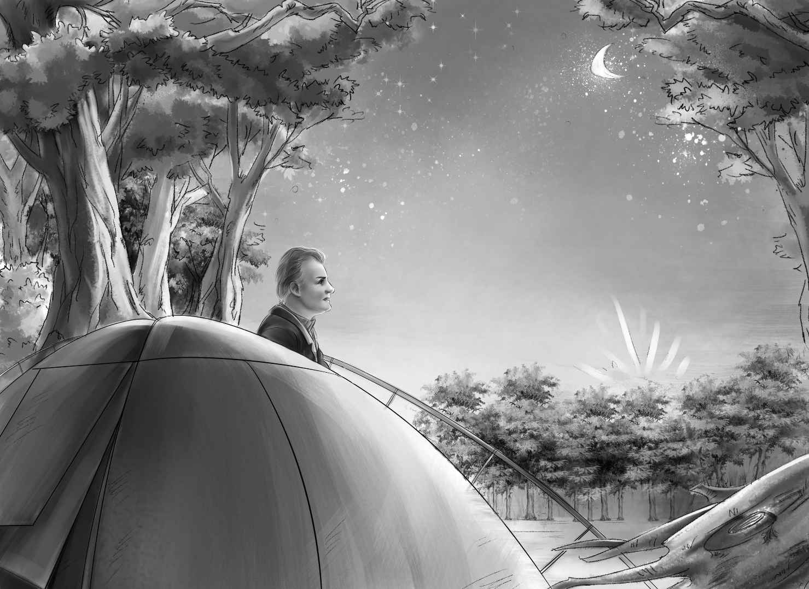

Company in the Woods
亨利几乎和大乔划得同样快，而两个多小时后，大乔发现亨利落到了后面。“亨利，累了吗？”大乔大声问道，随后减慢了速度，等亨利追上来。
“有点累了，大乔，”亨利大声回答，“还有多远？”
“不远了，”大乔说，“瞧那边！”他指着湖边的一个点说，“三棵树旁边就是营地！”
亨利一眼就看到了营地。“我能划到那里。”他大声说。
于是他们立刻继续前进。
“搭帐篷还需要一些时间，”大乔告诉杰西，“咱们得在天黑前早点赶到营地。”
“还要留时间做晚饭。”班尼补充道。
“别忘了我们还有客人。”大乔说着朝杰西眨了眨眼睛。
三棵树成了大家共同的目标。船渐渐靠向岸边，他们看到了可以泊船的沙滩，以及沙滩边的大片空地。
大乔用力一划，独木舟冲上了沙滩。紧接着，亨利的独木舟也上了岸，停在了旁边。大乔和亨利率先跳了下去。
接着，他们扶着其他人下了船，然后把沙滩上的两条船整个儿拖出水面，系到树上。
班尼看了一眼：“这样一来，船就不会漂走了。”
“大家将行头全部拿出来，”大乔大声说道，“放到这边的空地上。这儿是缅因州最好的宿营地之一。”
“还有张长长的木头餐桌呢！”亨利兴奋地喊道，“这里还有坐的位置，果然是个好地方！”
“真好闻！”维莉对爱丽丝说，“我喜欢常青树的气味，这让我想起了在旧棚车里住的日子。”
“可我还是没有看到客人啊！”班尼四处张望起来。
“你会看到的。”大乔十分肯定地说，“大家都饿了，所以第一件紧要的事情就是生火做饭。第二件事是搭帐篷，很快大家都会感到困乏的。”
大乔取出斧子，说：“这里有条小路，我们沿着这条路去树林里砍两棵小树回来，不要常青树！要跟图上的一样，看，树梢只有一边有个分叉，这样我们才能把小树插进地里。”
孩子们看了看图，向小路走去。
“等等！”大乔说，“还得再找一样东西回来。大家见过那种把水壶吊在火上的长树枝没有？我们要找根那样的长树枝，一头有杈，另一头可以吊水壶。”
“没有树长成那个样子的吧？”杰西说，“所有的树枝都是朝一个方向长的，不是吗，大乔？”
“你们四处瞧瞧。”大乔笑着说，“肯定能找到。”
孩子们先去找不属于常青类的小树。维莉最先发现了一棵，大乔说树杈正合适，于是亨利把它砍了下来。很快，杰西和班尼发现了另一棵类似的。
“大乔！别动！我听到了什么声音。”杰西突然说。
大家站在原地，仔细聆听。果然，树林中远远地传来了口哨声。大乔笑着说：“客人来了！”
口哨声越来越近。“喂——”大乔喊了一声。
“喂——”那边传来一个浑厚的声音。这时，孩子们才看到一个穿着褐色大衣的白发男人。他背着一个巨大的背包，脸被太阳晒成了棕色，蓝色的眼睛里透着慈祥。
“这是希尔先生，孩子们，”大乔微笑着介绍道，“龙先生告诉我，希尔先生是缅因州最好的向导。”
“过奖啦！”那人笑着说，“你就是大乔·奥登喽！我来给你们搭半遮炉，做玉米面包吧！”
“玉米面包？”爱丽丝兴奋地说，“我正想吃玉米面包呢！”
“我也想吃！”班尼喊道，“可是，半遮炉是什么？”
“班尼，我就知道你会问，”亨利笑着说，“我们也想知道呢！”
“不！”班尼大声说，“希尔先生，先别急着告诉我们答案。我们看着您搭炉子，就会知道它是什么了。”
“好主意！”亨利说，“不过别忘了，我们还要去找带两个杈的树枝呢！”
希尔先生其实已经看到那种树枝了，但他什么也没说，只是微笑着，等着孩子们自己去发现。
“看啊，看啊！”亨利终于找到了，他抬头看着一棵树说，“那儿有根树枝，两头都有树杈，我从没见过这样的树枝。”
“照着树杈的下面砍，亨利。”大乔说。
就这样，树枝被砍了下来。大乔和亨利又砍了些常青树的树枝，扛回营地，准备做床铺。
接着，希尔先生和大乔给每个人都分配了任务。“太阳落山前，我们必须把一切都准备好，”希尔先生说，“这里晚上会很冷，幸亏你们带了暖和的被褥。班尼——你是叫班尼吗？过来帮我扶着这两棵树。”
很快，两棵带杈的小树就立在地上了，中间搭了根长木棍，带钩的树枝则挂在长木棍上。希尔先生将水壶吊在树枝的钩子上。“看，将树枝推到一边去，”他说，“就可以同时加热两三样东西了！”
“我知道是怎么回事了，”班尼说，“做饭的同时，水也会被烧热。”
“热水是用来洗盘子的吗？”维莉问道。
“是的，洗什么都可以。”
“当然，也可以洗手。”亨利看了看自己的双手笑道。
“不过这里的土很干净，”班尼看着自己沾满泥巴的手说，“很好闻呢，有一种常青树的清香。”他很快就忘了自己的小脏手，因为希尔先生开始搭建能防风的半遮炉了。
“如果下雨的话，这炉子还能挡雨呢，”希尔先生对班尼说，“这是我们做玉米面包的烤箱。”
“哇，好有趣的炉子！”班尼说，“可是它怎么用呢？”
希尔先生笑了笑，说：“先将炉子搭起来，把开口的这边迎着火，看到了吗？炉内温度很高，能把玉米面包烤成均匀的焦黄色。吃完晚餐，我们可以让它另一边朝上，在里面洗盘子。”
“噢，真是个神奇的炉子！”亨利大声说，“班尼肯定不介意在里面洗盘子。”
“现在得去找柴火了，”希尔先生说，“我们要立刻将火生起来。”
班尼蹦了起来，卖力地去找柴火，他已经越来越饿了。
这时，大乔和亨利已经搭起了两顶小帐篷。爱丽丝和杰西在帐篷里面垫上常青树的枝叶当床铺。
“希尔先生在哪儿睡呢？”杰西问。
“哦，他自己有帐篷，”大乔回答道，“他很快就能搭起帐篷，铺好床，也能很快睡着。”
“希望他做好了玉米面包再睡。”爱丽丝说。
“咱们晚餐还要吃火腿和鸡蛋呢！”希尔先生说。
“可是我们没有鸡蛋啊。”班尼说。
“我有！”希尔先生笑着说，“我带了点食物，但是只够你们今天吃的，明天早上我就得走了。”
希尔先生把火腿放到大平底锅里，渐渐地，火腿被煎成了焦黄色，散发出阵阵诱人的香味。接着，他又放了12个鸡蛋进去。大乔说他至少可以吃两个蛋，亨利则说自己能吃三个。
希尔先生将黄油拿了出来，杰西一见便大声叫道：“是真正的黄油呢！你们还记得吗，我们第一次吃黄油还是在棚车里！”
“没有黄油，玉米面包就不好吃了。”希尔先生说。

维莉在桌上摆好铁盘，大家便开始享用宿营地的第一顿美餐了。
吃完饭，大乔说：“玉米面包和火腿都被消灭掉了。有谁不那么困的，能留下来洗盘子吗？”
“如果用这个好玩的烤箱洗盘子，我愿意。”班尼看着希尔先生把水壶里的热水倒进烤箱里。“可我好困啊，站着都能睡着。”
盘子很快就洗干净，也整理好了。
爱丽丝、维莉和杰西住一个帐篷，亨利、大乔和班尼睡另一个帐篷。他们把被褥铺到常青树枝做的床铺上。不一会儿，月亮升起来了，照亮了沉睡中的宿营地。
可是，一只黑色的庞然大物没有睡，它正在树林里穿行。它嗅到了人的气味，也嗅到了食物的香味。它走得非常轻，非常静。
树上有吃剩一半的火腿，挂得高高的，可是这难不倒它，它站直了身，几乎能将火腿整个拽下来。它极爱火腿，于是高举前爪，抓向美味，可食物偏偏前后摇摆起来。
然而，此刻醒着的不只这只庞然大物。希尔先生早已听到了访客的光临，他等这一刻已经很久了。“大乔！”他在帐篷里喊道，“有客人来了。”
大乔立即醒了过来：“我来告诉孩子们。亨利，快起来！”亨利被惊醒了。大乔又轻轻地呼唤杰西。不一会儿，所有人都醒了。
“哦，天哪！”维莉坐了起来，“那是什么？”